Recursion
Recursion
The Towers of Hanoi
Although a lot of problems exist, it is often fun (and interesting) to study games to see if we can glean anything of value from them beyond just entertainment. In some cases, we actually learn useful tactics that can help us solve real problems later on. The Towers of Hanoi is an old, simple game (in principle). You are presented with three pegs (or towers) on which you can move various discs around. Initially, the discs rest on a single tower (the largest is on the bottom and the smallest is on the top). The objective is to move the discs from this source tower to some destination tower. But there are rules:
Only a single disc can be moved at a time;
No larger disc may ever be placed on top of a smaller disc; and
Moving a single disc constitutes one move.
The objective, of course, is to move all of the discs from a source tower to a destination tower in the minimum number of moves. Here is an example of what the start of the game looks like (with three discs):
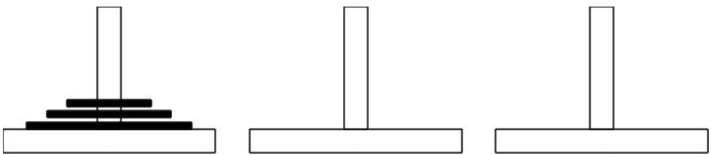
The game is interesting because it presents us with an optimization problem. That is, the goal is not just to find a solution (i.e., to successfully move the discs from the source tower on the left to the destination tower on the right), but to find one that is optimal (i.e., that results in some minimum number of moves). It is quite easy to eventually find a solution in, say, 100 moves. In fact, we can probably make mostly random moves and get there within 100.
The minimum number of moves required to solve the Towers of Hanoi with three discs turns out to be seven! In fact, here are the moves:
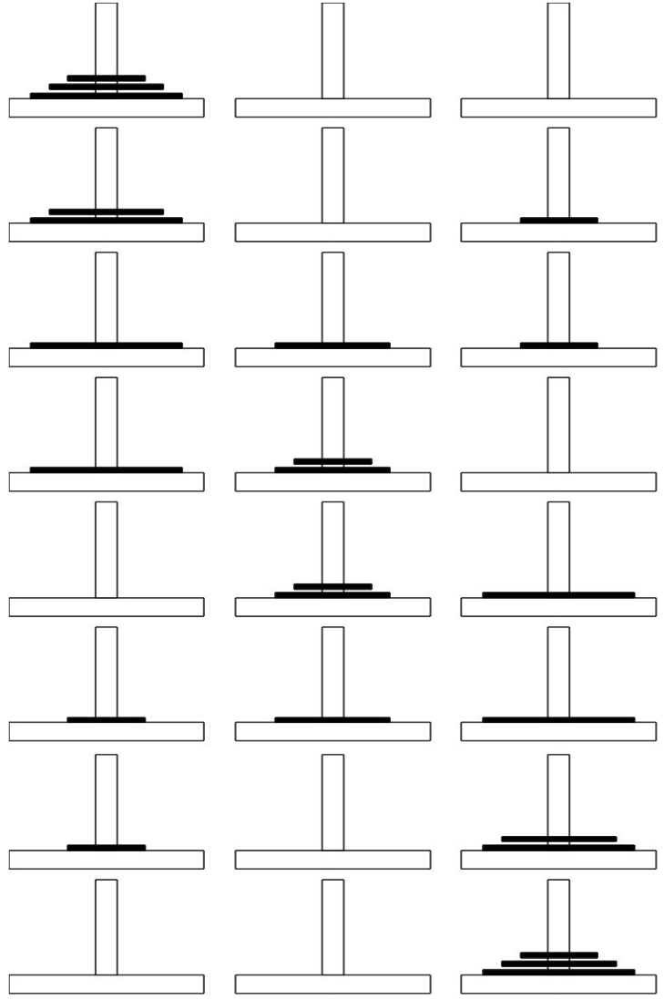
Trying our hand at solving the puzzle with one, two, three discs, and so on, may lead to some idea of where to place the first disc. We also notice a pattern; however, it is not so straightforward. In fact, attempting to design an algorithm to solve the puzzle would most likely be difficult at this point. It would undoubtedly involve repetition, and breaking down the problem so that it can be reasoned about and an algorithm designed is not as simple as it may initially appear
The simplest case of the Towers of Hanoi is one with a single disc. The minimum number of moves required in this case is, trivially, one (move the disc from the source tower to the destination tower). We can create a table that, given an initial number of discs, provides the minimum number of moves required for a Towers of Hanoi problem with that many discs:
| Number of Discs | Minimum number of moves |
|---|---|
| 1 | 1 |
| 2 | 3 |
| 3 | 7 |
| 4 | 15 |
| 5 | 31 |
| 6 | 63 |
In the general case of n discs, how many moves would it minimally take? Do you see a pattern? A quick look indicates that the minimum number of moves required appears to double each time a disc is added. For example, one disc requires one move. Two discs requires three moves (a bit more than double the number of moves required for a single disc). Three discs requires seven moves (a bit more than double the number of moves required for two discs). And so on
It appears that the minimum number of moves required can be represented as a power of two of the number of discs. In the case of a single disc, we have: \(2^{1} = 2\); and \(2 - 1 = 1\). In this case, that’s \(2^{1}-1\) moves (minimally). In the case of two discs, we have: \(2^{2} = 4\); and \(4 - 1 = 3\). That’s \(2^{2} - 1\) moves. And in the case of three discs, we have \(2^{3} = 8\); and \(8 - 1 = 7\). That’s \(2^{3} - 1\) moves. Generalizing this for n discs, we simply have \(2^{*n*} - 1\) moves (minimally)! Here’s the updated table:
| Number of Discs | Minimum number of moves |
|---|---|
| 1 | 1 |
| 2 | 3 |
| 3 | 7 |
| 4 | 15 |
| 5 | 31 |
| 6 | 63 |
| n | \(2^{n} - 1\) |
Let’s suppose that it takes 1 second for you to make a single move. How long would it take to complete the puzzle with six discs? Since it takes 63 moves to complete the puzzle with six discs, and each move takes 1 second, then it would take slightly over one minute to complete the puzzle. Since the number of moves effectively doubles each time a disc is added to the problem, so does the time it takes to solve the puzzle! For example, it would take approximately two minutes to solve a puzzle with seven discs, approximately 16 minutes for a puzzle with ten discs, and approximately 11 days for a puzzle with 20 discs!
Suppose that your computer could make 500 million moves per second (which is probably about right!). A quick calculation shows us that the Towers of Hanoi with 30 discs would take a little over two seconds. Again, it doubles with every additional disc. For example, it would take your computer approximately four seconds for a puzzle with 31 discs, approximately one minute for puzzle with 35 discs, and approximately one hour for a puzzle with 41 discs. And it would take almost one month for a puzzle with 50 discs! One month for a fast computer that can make 500 million moves per second!
It is said that a group of monks are working to solve the Towers of Hanoi with 64 golden disks. They believe that, once solved, it will be the end of the world. They move the discs by hand. Think of the size of the discs to be able to stack 64 of them (golden ones, mind you) on a single tower! They must require pulleys, ropes, many monks for each move, and so on. Suppose that they can make one move every ten minutes (which is quite fast, considering). It would take them over 350 billion millennia (that’s over 350 billion thousand years) to solve the puzzle in the minimum ~18.4 quintillion moves! I’m not worried…
Breaking problems down
Consider a simple question: Let’s say that there are ten students in the class. Suppose that some activity requires pairing students in groups of two. How many unique groups could be generated? That is, how many ways could the class be split up into groups of two? Although not particularly difficult, the answer is not obvious at first. A strategy may be to simplify the problem into a trivial case, and build up from there. We could do this by first considering a class of two students. How many groups of two could be formed? Clearly, only one. There is only one way to group two students in groups of two. Let’s add a third student. In fact, let’s consider the three students, S1, S2, and S3. How many ways could groups of two be formed from these three students? Let’s try to enumerate them all:
S1 and S2;
S1 and S3; and
S2 and S3.
So there are three ways to form groups of two from three total students. What about four total students, S1 through S4?
S1 and S2;
S1 and S3;
S1 and S4;
S2 and S3;
S2 and S4; and
S3 and S4
There are six ways to form groups of two from four total students. One more: what about five total student, S1 through S5?
S1 and S2;
S1 and S3;
S1 and S4;
S1 and S5;
S2 and S3;
S2 and S4;
S2 and S5;
S3 and S4;
S3 and S5; and
S4 and S5.
There are ten ways to form groups of two from five total students. How does this scale to more students? Take a look at this table (note that there are exactly zero ways to form groups of two from a single student!):
| Student | Groups |
|---|---|
| 1 | 0 |
| 2 | 1 |
| 3 | 3 |
| 4 | 6 |
| 5 | 10 |
| 6 | 15 |
| 7 | 21 |
| 8 | 28 |
| 9 | 36 |
| 10 | ? |
Can you guess the number of groups of two that can be formed with ten students? Can you see a pattern that gives the number of groups from some number of students? Take a closer look at a subset of the table above:
| Student | Groups |
|---|---|
| 1 | 0 |
| 2 | 1 |
| 3 | 3 |
For the case of three students, it seems that we can calculate the number of groups of two that can be formed as the sum of the number of groups of two that can be formed with two students plus those two students (i.e., 1 + 2 = 3). Let’s see if this continues to work out with four students:
| Student | Groups |
|---|---|
| 1 | 0 |
| 2 | 1 |
| 3 | 3 |
| 4 | 6 |
To calculate how many groups of two can be formed with four students, we can sum the number of students in the row above (3) with the number of groups that can be formed with that many students (3): (3 + 3 = 6).
And one more:
| Student | Groups |
|---|---|
| 1 | 0 |
| 2 | 1 |
| 3 | 3 |
| 4 | 6 |
| 5 | 10 |
The number of groups of two that can be formed with five students is the number of groups of two that can be formed with four students (6) plus those four students (4): (6 + 4 = 10). And now, we can calculate the number of groups of two that can be formed with 10 students:
| Student | Groups |
|---|---|
| 1 | 0 |
| 2 | 1 |
| 3 | 3 |
| 4 | 6 |
| 5 | 10 |
| 6 | 15 |
| 7 | 21 |
| 8 | 28 |
| 9 | 36 |
| 10 | 45 |
How can we generalize this for any number of students (say, n)? It turns out that we can use a recurrence relation to describe this behavior.
A recurrence relation is an equation that recursively defines a sequence. That is, each term in the sequence is defined as a function of the preceding terms in some way.
For example, in the table above the number of groups of two that can be formed with ten students is a function of the number of groups of two that can be formed with nine students. And that itself is a function of the number of groups of two that can be formed with eight students. And this goes on. Ultimately, however, we can establish some base (or trivial) case that is immediately answerable. For example, we can say (without needing to think about it too much) that no groups of two can be formed with one student. In fact, this is the simplest case for this problem. It is the base (or trivial) case.
Recurrence relations must ensure that, at some point, the base case is achievable. That is, the problem must be repeatedly broken down into smaller and smaller versions of itself, eventually reaching the base case. The solution to a specific term in the sequence is then built back up, from the base case! Algorithms that repeatedly break something down until a base case is reached and build a solution back up are known as divide and conquer algorithms.
For the groups of students problem stated above, we can define a function, G(n), that calculates the number of groups of two that can be formed from n total students. We could express this function as follows: \[\begin{equation} G(n) = \left\{\begin{array}{lr} 0 &\text{, if } n = 1\\ (n-1)+G(n-1) &\text{, otherwise} \end{array}\right. \end{equation}\]
We read this as follows: the number of groups of two that can be formed from n students is:
• 0, if the number of students, n, is 1; or
• n minus 1 plus the number of groups of two that can be formed from n minus 1 students, otherwise.
Although fully understanding this at this point is not necessary, note how the second part of the function is dependent on the function itself. That is, the otherwise part breaks the problem down a bit into a smaller version of itself via G(n – 1). The interesting thing is that the problem can be broken down enough times to ensure that the base case is eventually reached! If n is some positive number greater than 0, the recurrence relation will break down the problem until n is 1, at which point the base case is reached (and everything stops).
Formally, the equation above is known as a recurrence relation because it is defined in terms of itself. It also has two separate parts, and the result depends on the input value. In mathematics, we refer to this type of function as a piecewise function. This particular function has two pieces:
• The first results in 0, but only if the input value, n, is 1; and
• The second results in a broken down version of itself, otherwise (i.e., for values of n that are not 1).
Recursion
In computer science, recursion is usually understood to be the idea of a subprogram repeatedly calling itself. Of course, at some point this repeated calling has to stop (otherwise, it would be an infinite loop). In a previous lesson, we envisioned recursion as a spiral of sorts. Each time a subprogram calls itself, we descend down a level of the spiral until we eventually reach the bottom (some base or trivial case). At that point, execution begins to unwind as the subprogram calls complete and we retrace our path back up through the various levels until finally arriving at the top level where execution began. This is when the solution is built back up. Generally, however, recursion is just another name for recurrence relation.
Recursion is the process of breaking down a problem into smaller and smaller versions of itself until a base or trivial case is reached. Recursion must have two parts: (1) a base or trivial case that provides an immediate answer to some specified input; and (2) a recursive step that breaks the problem down into a smaller version of itself.
Recursion is the programming equivalent of mathematical induction (which is just defining something in terms of itself). To illustrate this more clearly, let’s take a look at a simple algorithm that computes a base to some power (i.e., xy):
# compute 2^10
x = 2
y = 10
pow = 1
for i in range(0, y):
pow *= x
print("{}^{} = {}".format(x, y, pow))This example computes 210 (1024). It basically multiplies one by the base (x) y times. When the base is two and the exponent is ten, it multiples one by two, ten times (i.e., 1 * 2 * 2 * 2 * 2 * 2 * 2 * 2 * 2 * 2 * 2).
To convert this iterative algorithm to a recursive one, we must first define the recurrence relation that solves the problem. First, the base or trivial case. For exponents, that’s simple: \(x^{0} = 1\). That is, anything raised to the power zero is always one. The recursive step takes more thought. A hint is to observe how powers can be broken down. For example: \(2^{2} = 2 * 2\). Extending this, \(2^{3} = 2 * 2 * 2\). This can be rewritten as \(2^{3} = 2 * 2^{2}\). We can extend this further: \(2^{4} = 2 * 2^{3}\). Notice how the exponents can be repeatedly broken down into smaller exponents. The trick is to see if the base case is eventually reached.
Let’s take a look at the first example again: \(2^{2} = 2 * 2\). Technically, \(2^{2} = 2 * 2^{1}\). And \(2^{1} = 2 * 2^{0}\)! So the base case can eventually be reached. We can now formally define a recurrence relation for some function Pow(x, y) as follows:
\[\begin{equation} Pow(x, y) = \left\{\begin{array}{lr} 1 &\text{, if } y = 0\\ x*Pow(x, y-1) &\text{, otherwise} \end{array}\right. \end{equation}\]
Let’s see if it works with an example: 25 (which is 32). In the recurrence relation above, we would call the function with Pow(2, 5). Since y is not zero, the second (recursive) case is applied resulting in 2 * Pow(2, 4). To calculate Pow(2, 4), the second case is applied again resulting in 2 * Pow(2, 3). And to calculate Pow(2, 3), we apply the second case another time which results in 2 * Pow(2, 2). We have to apply the second case a few more times: first with Pow(2, 2) which results in 2 * Pow(2, 1), and lastly with Pow(2, 1) which results in 2 * Pow(2, 0). At this point, the first (base) case is applied (since y is 0) resulting in 1. We can now build it all back up: 1 * 2 * 2 * 2 * 2 * 2 = 32.
Perhaps this is best illustrated as follows; first with the recursive calls:
Pow(2, 5)
2 * Pow(2, 4)
2 * Pow(2, 3)
2 * Pow(2, 2)
2 * Pow(2, 1)
2 * Pow(2, 0)
Now let’s build the result back up:
Pow(2, 5) 32
2 * Pow(2, 4) 16
2 * Pow(2, 3) 8
2 * Pow(2, 2) 4
2 * Pow(2, 1) 2
2 * Pow(2, 0) 1
Notice how, at each step in the building back up, the result of the recursive calls combine to form simple arithmetic problems (e.g., 2 * Pow(2, 0) becomes 2 * 1 which equals 2). The arithmetic results form the answer to a previous recursive call (which is then replaced to form another simple arithmetic problem).
Here’s another interesting mathematical function: the factorial. Let’s first look at its recursive definition:
\[\begin{equation} Frac(n) = \left\{\begin{array}{lr} 1 &\text{, if } n = 0\\ n*Frac(n-1) &\text{, otherwise} \end{array}\right. \end{equation}\]
The factorial function repeatedly multiplies some integer by all the integers below it (up to 1). For example, five factorial (referred to as 5!) = 5 * 4 * 3 * 2 * 1 = 120. To see how this works, let’s take a look at some examples:
5! = 5 * 4 * 3 * 2 * 1 = 120
4! = 4 * 3 * 2 * 1 = 24
3! = 3 * 2 * 1 = 6
2! = 2 * 1 = 2
1! = 1
Note how 4! is embedded within 5!:
5! = 5 * 4 * 3 * 2 * 1
And so on. In fact, we could say that 5! = 5 * 4!, and 4! = 4 * 3!, and 3! = 3 * 2!, and so on. This clearly breaks the problem down into smaller and smaller versions of itself. So what is the base case? Perhaps it’s just that 1! = 1. Although correct, mathematicians actually prefer 0! = 1 (as illustrated in the recurrence relation above). So the breaking down occurs as follows:
5! = 5 * 4!
4! = 4 * 3!
3! = 3 * 2!
2! = 2 * 1!
1! = 1 * 0!
0! = 1
And now we can implement a recursive factorial function as follows:
def fact(n):
if (n == 0):
return 1
else:
return n * fact(n - 1)And to compute 5!:
print("5! = {}".format(fact(5)))Let’s see how the recursion works as in the previous Pow example; first with the recursive calls:
fact(5)
5 * fact(4)
4 * fact(3)
3 * fact(2)
2 * fact(1)
1 * fact(0)
Next with the building back up:
fact(5) 120
5 * fact(4) 24
4 * fact(3) 6
3 * fact(2) 2
2 * fact(1) 1
1 * fact(0) 1
Although not always simple, any iterative algorithm can be converted to a recursive one and vice versa!
Try implementing an iterative factorial algorithm (in Python)
Another interesting mathematical function is one that generates the Fibonacci sequence. Although it has been featured in a puzzle, no actual function was provided. Let’s take a look at the Fibonacci sequence: 0, 1, 1, 2, 3, 5, 8, 13, 21, 34, 55, 89, …
A term in the sequence can be calculated as the sum of the two previous terms. For example, the seventh term (8) is the sum of the fifth and sixth terms (3 and 5). Here’s a recurrence relation for the Fibonacci sequence:
\[\begin{equation} Fib(n) = \left\{\begin{array}{lr} 0 &\text{, if } n = 1\\ 1 &\text{, if } n = 2\\ Fib(n-1)+Fib(n-2) &\text{, otherwise} \end{array}\right. \end{equation}\]
Note that this recurrence relation has two base cases! This is necessary since the recursion requires the sum of the two previous terms. The first term in the sequence, Fib(1), is 0 (the first base case). The second term in the sequence, Fib(2), is 1 (the second base case). The remaining terms are calculated recursively as the sum of the previous two terms, Fib(n – 1) + Fib(n – 2). Here’s how the recursion breaks down for Fib(6) (which equals 5). Since there are multiple branches of recursion (i.e., two parts to each recursive call), we’ll use a different method to show the recursion:
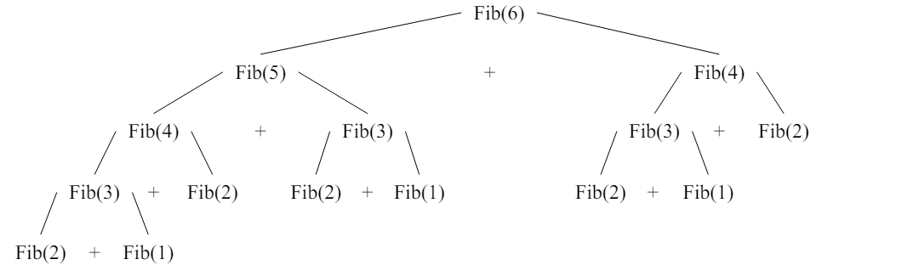
At the top, Fib(6) breaks down to Fib(5) + Fib(4). The figure then takes on an upside-down tree-like structure. Note how, if flipped upside-down, the top would form a root. The root then splits into two branches, each of which split into two more branches, and so on. The values at the bottom of the figure form what are called leaves. These represent the base cases, all either Fib(1) or Fib(2). In a future lesson, we will discuss trees more formally.
We can build the result back up as follows:
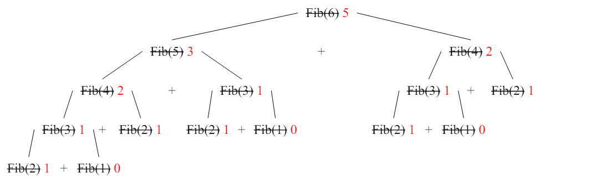
The result (at the top) is, as expected, 5.
The Towers of Hanoi… Reloaded
As noted earlier, crafting an algorithm for this puzzle is not as simple as it sounds. In fact, it is quite difficult to design an iterative algorithm for it. Let’s see if we can use recursion to our advantage. Consider the puzzle with three discs:
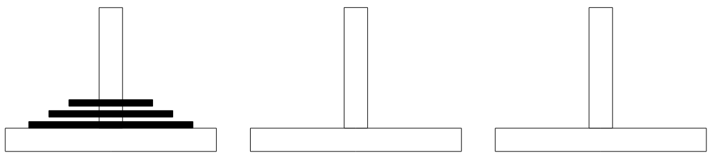
Suppose that the destination tower is the one on the right. The middle tower will be used as a spare. In order to move all three discs from the source tower to the destination tower, we can think of first needing to move two discs (the top two, in fact) from the source tower to the spare tower:
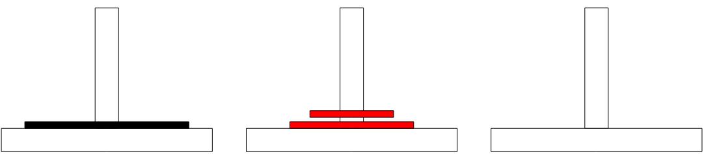
Clearly this is not possible since we cannot move two discs simultaneously; however, let’s continue with this train of thought for a moment. Supposing that we have successfully done this, then we would need to move the single disc left on the source tower to the destination tower:
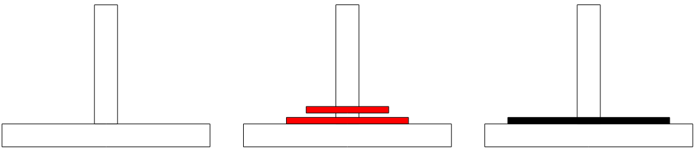
And all that would be left to do is to move the two discs that are on the spare tower over to the destination tower:
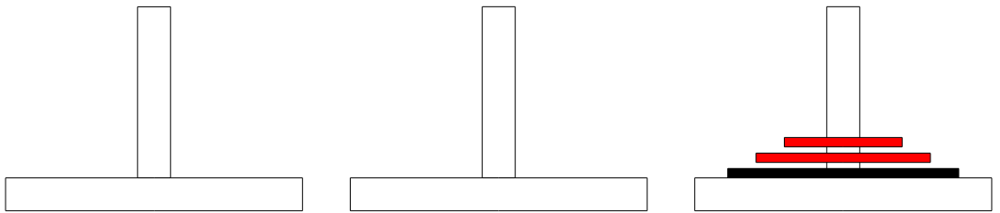
Puzzle solved! However, as mentioned we cannot move two discs simultaneously. However, let’s go back to the original state:
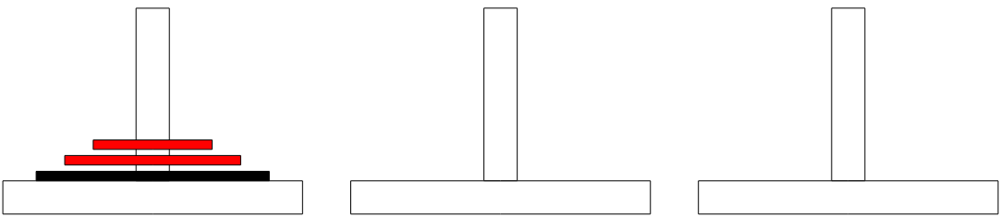
In order to move the two top discs from the source tower to the spare tower, we first need to move the single top disc from the source tower to the destination tower:
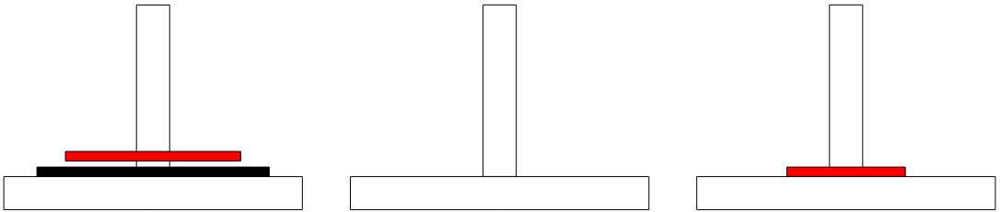
We can then move the second disc from the source tower to the spare tower:
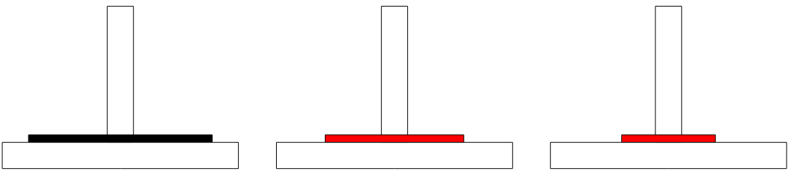
And we can finally move the small disc from the destination tower to the spare tower:
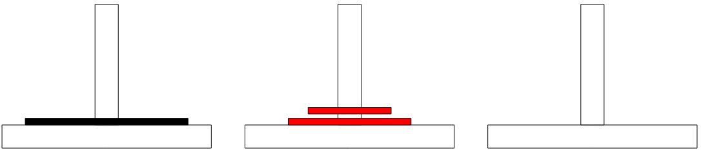
In a sense, the three disc puzzle (i.e., moving three discs from the source tower to the destination tower) is a two-disc puzzle (moving the two top discs from the source tower to the spare tower), followed by a one-disc puzzle (moving the largest disc from the source tower to the destination tower), and finished with a two-disc puzzle (moving the two discs left on the spare tower to the destination tower).
But of course, the two-disc puzzles are simply three one-disc puzzles! And a one-disc puzzle is simple: just move the disc from one tower to another. Moving one disc is, in fact, the base case of the Towers of Hanoi! Moving more than one disc can be broken down as a sequence of three smaller puzzles as follows:
Move all but the bottom disc from the source tower to the spare tower;
Move the largest disc from the source tower to the destination tower; and
Move the discs on the spare tower to the destination tower.
Or in general, given n discs:
Move n – 1 discs from source to spare;
Move 1 disc from source to destination; and
Move n – 1 discs from spare to destination.
We can design a recursive algorithm in Python as follows:
def hanoi(n, src, dst, spr):
if (n == 1):
print("{} -> {}".format(src, dst))
else:
hanoi(n - 1, src, spr, dst)
hanoi(1, src, dst, spr)
hanoi(n - 1, spr, dst, src)Note the parameters in the function hanoi. The variable n specifies the number of discs. The variables src, dst, and spr refer to the three towers. We can execute the algorithm and call the hanoi function (with three discs from a source tower A to a destination tower C using a spare tower B) as follows:
hanoi(3, "A", "C", "B")Here is the output:
A -> C
A -> B
C -> B
A -> C
B -> A
B -> C
A -> CThe recursive function does require a little bit of explanation. Let’s take a look at the initial call to the function again:
hanoi(3, "A", "C", "B")When this call occurs, the actual parameters, 3, “A”, “C”, and “B”, are passed in (or mapped) to the formal parameters, n, src, dst, and spr. To be clear, the source tower is A, and the destination tower is C. The first part of the recursive function, representing the base case when n = 1, is clear: simply move the single disc from src to dst. This is accomplished by displaying the move to the console
print("{} -> {}".format(src, dst))If n > 1, the recursive step is applied:
hanoi(n - 1, src, spr, dst)
hanoi(1, src, dst, spr)
hanoi(n - 1, spr, dst, src)That is, to move n discs from src to dst using spr, we must first move n – 1 discs from src to spr (using dst as the temporary spare tower), then move one disc from src to dst, and finally move the n – 1 discs moved previously from spr to dst (using src as the temporary spare tower). Let’s look at the first call only along with the function definition:
def hanoi(n, src, dst, spr):
...
hanoi(n - 1, src, spr, dst)In this call, the actual parameter, n – 1, is mapped to the formal parameter, n. So whatever n is in the function, when it is called again, it is with n – 1. Similarly, src is mapped to src (since moving n discs from some source results in moving n – 1 discs from that source first). The n – 1 discs, however, are moved to the spare tower (to get them out of the way). So the call maps spr as the actual parameter to dst as the formal parameter. Lastly, dst is mapped to spr. That is, the destination tower is temporarily used as the spare tower when moving the n – 1 discs out of the way.
Perhaps this is best viewed dynamically, as each call is made. Let’s illustrate this with a simple puzzle with two discs:
hanoi(2, "A", "C", "B")This call results in the following variable values:
| n | src | dst | spr |
|---|---|---|---|
| 2 | A | C | B |
The recursive step is then applied, which results in the following three recursive calls:
1 A B C
hanoi(n - 1, src, spr, dst)
A B C
hanoi(1, src, dst, spr)
1 B C A
hanoi(n - 1, spr, dst, src)
Since these are all one-disc puzzles, the base case is applied each time (which simply displays the move to the console). The first recursive call results in the the following variable values:
| n | src | dst | spr |
|---|---|---|---|
| 1 | A | B | C |
It therefore displays the following move: A → B. The second recursive call results in the the following variable values:
| n | src | dst | spr |
|---|---|---|---|
| 1 | A | C | B |
It therefore displays the following move: A → C. The third recursive call results in the the following variable values:
| n | src | dst | spr |
|---|---|---|---|
| 1 | B | C | A |
It therefore displays the following move: B → C. The three moves do, in fact, solve the two-disc puzzle. Note that the values for the three towers can be anything. The strings “A”, “B”, and “C” were used above; however, the integers 1, 2, and 3 would work just as well. If we wish, we can display the moves required for puzzles with one through four discs as follows:
for i in range(1, 5):
print("The Towers of Hanoi with {} disc(s):".format(i))
hanoi((i, "A", "C", "B")
print()The output of this modified algorithm is:
The Towers of Hanoi with 1 disc(s):
A -> C
The Towers of Hanoi with 2 disc(s):
A -> B
A -> C
B -> C
The Towers of Hanoi with 3 disc(s):
A -> C
A -> B
C -> B
A -> C
B -> A
B -> C
A -> C
The Towers of Hanoi with 4 disc(s):
A -> B
A -> C
B -> C
A -> B
C -> A
C -> B
A -> B
A -> C
B -> C
B -> A
C -> A
B -> C
A -> B
A -> C
B -> C